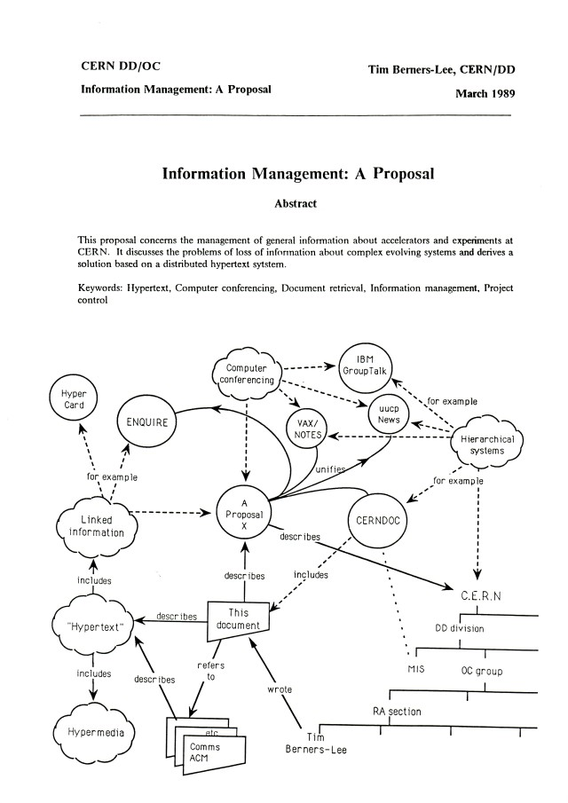

ARPANET
UCLASRIUCSBUTAH
미국 국방부 산하 ARPA가 지원하고 대학·연구기관을 연결한 연구망由美国国防部下属 ARPA 支持，连接大学与研究机构的研究网络
Web은 본래 ‘거미줄’이라는 뜻입니다. 서로 다른 문서가 링크로 이어진 모습을 거대한 거미줄에 빗대어 World Wide Web이라고 불렀습니다.Web 本来就有“蜘蛛网”的意思。不同文档通过链接相连，像一张覆盖世界的巨网，因此称为 World Wide Web。
초기에는 웹 서버임을 나타내려고 www를 자주 붙였습니다. 지금은 www가 없어도 웹사이트에 접속할 수 있습니다.早期常用 www 表示 Web 服务器。如今没有 www 也能访问网站。
웹은 인터넷에서 사용하는 여러 서비스 가운데 하나입니다.Web 是互联网众多服务中的一种。
미국 국방부 산하 ARPA가 지원하고 대학·연구기관을 연결한 연구망由美国国防部下属 ARPA 支持，连接大学与研究机构的研究网络
ARPANET을 통해 다른 컴퓨터의 사용자에게 메시지를 보냄通过 ARPANET 向其他计算机的用户发送消息

CERN에서 연구자료 공유를 위해 제안
1990 첫 서버·브라우저
1993 자유 공개在 CERN 为共享研究资料而提出
1990 首个服务器与浏览器
1993 自由开放
https://www.google.co.krwww.google.co.kr주소창에서 https://가 안 보이더라도 없어진 것은 아닙니다. 주소창을 누르거나 주소를 복사하면 전체 주소를 확인할 수 있습니다.地址栏中看不到 https://，并不表示它不存在。点击地址栏或复制地址时，可以确认完整地址。
브라우저의 요청과 서버의 응답을 어떤 방식으로 주고받을지 정한 약속规定浏览器的请求与服务器的响应如何交换的约定
HTTP 통신을 암호화해 보호하는 방식对 HTTP 通信进行加密保护的方式
브라우저는 주소를 보기 쉽게 일부 감춰 보여 줄 수 있습니다. 표시를 감춘 것과 주소에서 없어진 것은 다릅니다.浏览器可能为了易读而隐藏地址的一部分。隐藏显示与从地址中消失并不是一回事。
브라우저는 우리가 서버와 대화하는 창구이고, 서버는 요청받은 문서나 데이터를 찾아 응답하는 컴퓨터 또는 프로그램입니다.浏览器是我们与服务器交流的窗口，服务器则是查找并返回所需文档或数据的计算机或程序。
웹페이지 하나를 열 때 그림·글꼴·데이터 때문에 요청과 응답이 여러 쌍 생길 수 있습니다. 그래도 각 쌍은 요청 한 번과 응답 한 번으로 생각하면 됩니다.打开一个网页时，图片、字体和数据可能产生多组请求与响应。但每一组仍可看作一次请求和一次响应。
보통은 한 번의 요청에 한 번 응답하지만, 채팅처럼 연결을 유지하며 계속 주고받는 WebSocket 같은 방식도 있습니다.通常一次请求会得到一次响应，但聊天等服务也会使用 WebSocket，保持连接并持续交换数据。
천공카드는 프로그래밍 언어가 아닙니다. 명령과 데이터를 구멍의 위치로 기록해 컴퓨터에 넣던 물리적인 입력 매체입니다.穿孔卡不是编程语言。它是把指令与数据记录在孔洞位置后送入计算机的物理输入介质。
카드를 잘못 뚫거나 순서를 섞으면 프로그램도 잘못되었습니다.卡片打孔错误或顺序混乱，程序也会出错。
사람이 컴퓨터에 가까운 표현을 많이 적던 방식에서, 도구가 사람의 표현을 컴퓨터가 실행할 코드로 바꾸는 방식으로 이동했습니다.从人必须写大量接近计算机的表达，逐渐走向由工具把人的表达转换为可执行代码。
1985년은 C++의 첫 상용 공개 시점입니다. 그때부터 게임에 쓰였다는 뜻은 아닙니다. 또한 Java와 JavaScript는 이름이 비슷하지만 서로 다른 언어입니다.1985 年是 C++ 首次商业发布的时间，并不表示它从那一年起就用于游戏。Java 与 JavaScript 名字相似，但属于不同语言。
10110000 00000010 00000100 00000011 …mov eax, 2
add eax, 3PRINT *, 2 + 3print(2 + 3)2와 3을 더한 결과를 보여 주는 Python 프로그램을 만들어 줘.하드웨어가 처리하는 방식에 가깝다. 세밀하게 다룰 수 있지만 사람이 읽기 어렵다.更接近硬件处理方式，控制细致，但人较难阅读。
사람의 식과 문장에 가까워 읽고 쓰기 쉽다. 실행 가능한 형태로 바꾸는 과정이 필요하다.更接近人的公式与句子，易读易写，但需要转换为可执行形式。
위의 0과 1은 특정 컴퓨터에서 그대로 실행할 실제 프로그램이 아니라, 기계어가 사람에게 얼마나 읽기 어려운지 보여 주는 개념 예시입니다.上面的 0 和 1 不是可直接执行的具体程序，而是用来展示机器语言对人有多难读的概念示例。
과거에는 사람이 컴퓨터가 이해할 표현을 직접 많이 적어야 했습니다. 지금은 자연어로 원하는 일을 설명하면 AI가 Python 같은 프로그래밍 언어의 코드를 작성할 수 있습니다.过去，人必须亲自写下大量计算机能理解的表达。现在，用自然语言说明想做的事，AI 就能编写 Python 等编程语言的代码。
“점수의 평균을 계산해 줘.”
요청을 코드로 연결把请求连接到代码
print((82+91+76)/3)무엇을 만들지, 어떤 결과가 필요한지, 무엇을 확인해야 하는지 분명하게 말할수록 AI와 더 정확하게 일할 수 있습니다.越能清楚说明要做什么、需要什么结果、应检查什么，就越能准确地与 AI 协作。
AI가 코드를 작성해도 실제로 실행되는 것은 프로그래밍 언어의 코드입니다. AI는 자연어와 코드 사이를 이어 주는 새로운 입구입니다.即使代码由 AI 编写，真正执行的仍是编程语言代码。AI 是连接自然语言与代码的新入口。
www는 무엇의 줄임말인가?www 是什么的缩写？다음에는 두 값을 비교한 결과가 참인지 거짓인지 확인하고, 그 결과로 프로그램이 판단하는 방법을 살펴봅니다.下一课将比较两个值，确认结果是真还是假，并观察程序如何据此判断。